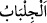

“Ve” Medîne’deki “mü’minlerin kadınlarına (bir ihtiyaç için dışarı çıktıkları
zaman) dış örtülerini üstlerine almalarını söyle.”
“
” başörtüsünden geniş, gömlekten (ridâ) küçük bir örtüdür. Kadın bunu başına
alır, bir kısmını da göğsüne kadar sarkıtır. “ ” harf-i cerri, teb‘îz içindir. Yâni kadın
cilbâbının bir kısmını sarkıtır, bir kısmı ile de sarınıp örtünür.
Yâni bir ihtiyaç için evlerinden çıktıkları vakit cilbâbları ile yüzlerini ve bedenlerini
örtsünler. Câriyeler gibi yüzleri ve bedenleri açık olarak çıkmasınlar ki sefihler onları
câriye zannederek saldırmasın.
“Onların tanınması” önceki âyette zikredildiği gibi zinâkarların saldırmasına ve
eziyetlerine mahal olan câriyelerden ve kötü kadınlardan ayrılması “ve” fücûr ehli
kimseler tarafından kendilerine sataşılarak “incitilmemesi için en elverişli olan
budur.” Bu örtünme şeklidir.
Enes (r.a.)’tan rivâyet edildiğine göre Hz. Ömer (r.a.)’ın yanından peçe ile örtünmüş
bir câriye geçti. Hz. Ömer (r.a.) kamçısı ile onun peçesini kaldırdı. Câriyeye: “Ey
ahmak kadın, bu hâlinle hür kadınlara benzemeye mi çalışıyorsun? At peçeyi.” demiştir.
“Allah” daha önceki kusurları ve tesettürü terk etmeyi “bağışlayandır” kullarını
“esirgeyendir” çok merhametlidir. Çünkü cüz’î meselelere varıncaya kadar kullarının
maslahatlarını görüp gözetir.
Âyette kadınların kendilerini korumalarına, kendilerini sakınarak ve iffetli olarak
haklarını gözetmelerine tenbih vardır. Yine burada onların Hak huzurundaki mertebeleri,
kadir ve kıymetlerinin yüceliği isbât edilmektedir. Onun için onlar bozuk arzularla ve
yalan sözlerle incitilmesinler. Allah emirlere sarılmasıyla onları ziyade bağışlayandır.
Derecelerini yükseltmekle de onlara ziyade merhametlidir. Nitekim et-Te’vîlâtü’n-
Necmiyye’de böyle geçmektedir.
Bilesin ki bu âyetten iki şey anlaşılmaktadır. Birincisi şudur: “Âyetin indiği zamanda
kadınlar ihtiyaçlarını görmek için örtünmek ve iffetlerini korumak üzere ancak geceleyin
dışarı çıkarlardı. Bir zarûrete binâen gündüz dışarı çıktıklarında ise örtünme, edebe
riâyet, vakar, iyi-kötü yabancı erkeklere bakmama gibi hususlarda mübâlağa ederlerdi.
Dışarı sıradan esvaplarla çıkarlardı. Bir kadın koku sürünerek, ziynetini ve
güzelliklerini yabancı erkeklere göstererek evinden dışarı çıkarsa günah ve vebâle
girme konusunda zinâ eden kadına benzemiş olur.
Şeyh Sa‘dî der ki:
Kadın çarşıya yöneliyorsa, ona vur,
Yoksa kadın gibi sen evde oturursun.
Kadının gözü yabancılara karşı kör olmalı;
Kadın evden çıkmışsa, mezara gitmeli.